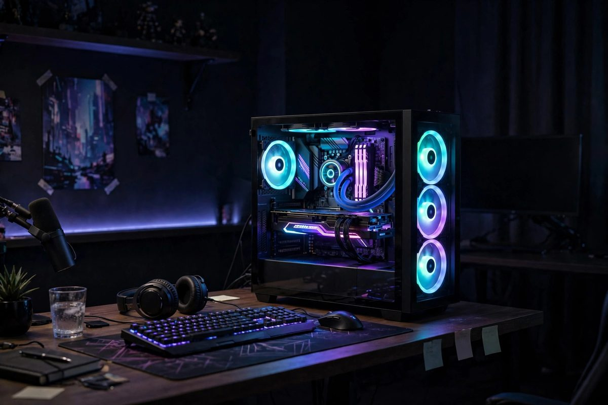

PUBG PC System Requirements 2026 (Minimum & Recommended)

Before you download PUBG on PC, it pays to know whether your computer can actually run it well. PUBG is a large, detailed battle royale, and the difference between the minimum and recommended specs is the difference between a stuttering match and a smooth one. This guide lays out both, explains what each part does, and shows you how to check your own PC.
Minimum System Requirements
The minimum specs are the lowest hardware that will launch the game and let you play, though usually at low settings and modest frame rates. Meeting only the minimum means you should expect 30 to 45 frames per second at 1080p with most graphics options turned down, and you may still see dips in busy areas such as Pochinki or during the opening parachute drop.
- Operating system: Windows 10 64-bit
- Processor: Intel Core i5-4430 or AMD FX-6300
- Memory: 8 GB RAM
- Graphics card: NVIDIA GeForce GTX 960 (2 GB) or AMD Radeon R7 370 (2 GB)
- DirectX: Version 11
- Storage: 40 GB of free space
- Network: Broadband internet connection
These are the official baseline figures. If your PC sits below any one of them, the game may refuse to start, crash during loading, or run so slowly that it is not enjoyable. The graphics card and the amount of RAM are usually the two parts that matter most at this level.
Recommended System Requirements
The recommended specs describe a PC that can run PUBG at 1080p with a mix of medium to high settings while holding a steady 60 frames per second or better. This is the target to aim for if you want the game to look good and feel responsive in gunfights.
- Operating system: Windows 10 or Windows 11 64-bit
- Processor: Intel Core i5-6600K or AMD Ryzen 5 1600
- Memory: 16 GB RAM
- Graphics card: NVIDIA GeForce GTX 1060 (3 GB) or AMD Radeon RX 580 (4 GB)
- DirectX: Version 11
- Storage: 50 GB of free space, SSD strongly recommended
- Network: Broadband internet connection
Note that the recommended specs are a floor for smooth play, not a ceiling. Modern mid-range hardware such as an RTX 3060 or RX 6600 will comfortably exceed them and let you push settings higher or play at 1440p.
Minimum vs Recommended at a Glance
| Component | Minimum | Recommended |
|---|---|---|
| OS | Windows 10 64-bit | Windows 10 / 11 64-bit |
| CPU | Intel i5-4430 / AMD FX-6300 | Intel i5-6600K / AMD Ryzen 5 1600 |
| RAM | 8 GB | 16 GB |
| GPU | GTX 960 2 GB / R7 370 2 GB | GTX 1060 3 GB / RX 580 4 GB |
| Storage | 40 GB free | 50 GB free (SSD preferred) |
| DirectX | Version 11 | Version 11 |
What Each Part Actually Does in PUBG
Your graphics card does most of the heavy lifting. It renders the map, the buildings, the vegetation and the other players, so a weak GPU is the most common reason for low frame rates. Your processor handles the game logic, physics and the large number of players in a match, and a slow CPU often shows up as stuttering when many players are nearby. Memory matters because PUBG loads a huge map into RAM; with only 8 GB, Windows and the game compete for space, which can cause hitching when you land or drive across the map. Storage affects loading times rather than frame rates: an SSD gets you into matches faster and reduces texture pop-in, while an old hard drive can leave you staring at blurry buildings for the first seconds after landing.
Can You Play PUBG on a Low-End PC?
Yes, with the right expectations and settings. If your PC is close to the minimum specs, set the resolution to 1080p, drop the overall graphics preset to Very Low, and turn off anti-aliasing, post-processing and shadows first, since those cost the most performance. Close your browser and other heavy programs before launching, and keep your graphics drivers updated, because driver updates often include performance fixes for popular games. Many players on older hardware get a playable 45 to 60 frames per second this way. If your PC is well below the minimum, though, no settings tweak will fix it, and your money is better spent on a single upgrade, usually the graphics card or an extra stick of RAM, rather than on a whole new computer.
Tip: Install PUBG on an SSD if you have one. It will not raise your frame rate, but it cuts loading times sharply and stops the blurry-texture problem many hard-drive players see right after landing. If your SSD is nearly full, free up space first, because a drive with less than 10 percent free space slows down.
How to Check Your PC Specs
On Windows, press the Windows key and R together, type dxdiag, and press Enter. The System tab shows your processor and memory, and the Display tab shows your graphics card and its video memory. Compare those numbers with the table above. You can also open Settings, then System, then About for a quick look at your CPU and RAM. Steam can help too: open the PUBG store page and scroll to the system requirements section, where Steam will flag anything your current computer does not meet. Checking takes two minutes and saves you from downloading a 40-plus gigabyte game your PC cannot run.
Frequently Asked Questions
Can I play PUBG on PC with 8 GB of RAM?
Yes, 8 GB is the official minimum and the game will run, but you should close other programs first and expect occasional stuttering. Upgrading to 16 GB is the single cheapest improvement for most low-end systems.
Does PUBG on PC need an SSD?
No, an SSD is not required, but it is strongly recommended. The game runs on a hard drive, but loading times are much longer and textures can take a few seconds to sharpen after landing.
Can I run PUBG without a graphics card?
Not really. PUBG needs a dedicated graphics card or a modern processor with capable integrated graphics, and even then performance is poor. A basic dedicated GPU such as a GTX 960 is the practical minimum.
Download PUBG Now
Get the official game from the official stores. PUBG on PC is free to play on Steam; PUBG Mobile is available on Google Play and the App Store.